- Index
-
 ImageMagick Examples Preface and Index
ImageMagick Examples Preface and Index
-
Known and Fixed Bugs Index
The following is a demonstration before and after results
and IM Examples development examples of a new or exapnded
aspect of ImageMagick. During the creation of the IM Examples
for
Quantization and
Dithering I saw an oppertunity to expand the ordered dither
functionality to not only provide more ordered dither patterns,
but also expand it to provide an ordered dithered posterization
functionality. That is allow not only bitmap dithering, but
dithering between multiple color levels as per the
"
-posterize"
operator. See
Posterize, recolor using
primary colors for examples.
Original Ordered Dither Threshold Maps
This is
section is a reference and will not be updated. This is
what the IM "
-ordered-dither"
operator provided before the expandion of this operators
functionality.
convert logo: -resize 40% -crop 100x100+105+50\! logo.png
convert logo.png -ordered-dither 2x2 logo_2x2.gif
convert logo.png -ordered-dither 3x3 logo_3x3.gif
convert logo.png -ordered-dither 4x4 logo_4x4.gif
|
 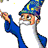 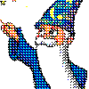 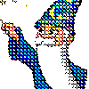
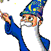 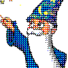 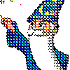
Note that ordered dither was able to, by default so a
level 2 posterization of images. This will be the last time I
look at this. Notice that it only provided these three ordered
dither patterns, and these patterns had to be specified as
numbers, representing the patterns tile size. Lets look at
these patterns using gradients.
convert gradient:'[640x1]' -scale 640x30\! -negate gradient.png
convert gradient.png -ordered-dither 2x2 orig_2x2.gif
convert gradient.png -ordered-dither 3x3 orig_3x3.gif
convert gradient.png -ordered-dither 4x4 orig_4x4.gif
convert gradient.png -ordered-dither 8x8 orig_8x8.gif
|
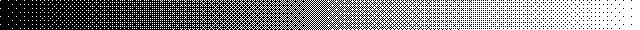
The extra '
8x8' ordered dither pattern was
an existing ordered dither function that was only linked into
the "
-ordered-dither"
operator with IM v6.2.9-2, under my suggestion. In version IM
v6.2.8-6 some digital-halftone dither patterns was added by
Glenn Randers-Pehrson.
convert gradient.png -ordered-dither 2x1 orig_2x1.gif
convert gradient.png -ordered-dither 4x1 orig_4x1.gif
convert gradient.png -ordered-dither 6x1 orig_6x1.gif
convert gradient.png -ordered-dither 8x1 orig_8x1.gif
|
![[IM Output]](orig_2x1.gif) 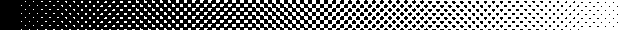
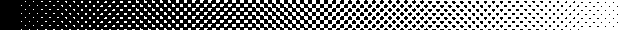
Note the 'hack'-like nature using a '
x1'
number to allow the addition of these dithering patterns. Also
note that at this time "
-ordered-dither"
and "
-random-dither"
operators were aliases for each other, which is why this
restriction existed. But it also created a horrible 'fall-back'
situation, in that if the arguments for "
-ordered-dither"
was wrong, IM would do a "
-random-dither"
using a very bad set of argument, rather than give the user an
error.
Ordered Dither Threshold Maps Expansion (and
naming)
From IM v6.2.9-7, the above changed, to allow the
use of more symbolic selection of the ordered dither threshold
maps, with IM returning an error if no map was selected rather
than falling back to the disasterious "
-random-dither"
operator. First of all, all the threshold maps used for the
ordered dither patterns were checked and updated to produce a
better result for the specified style. For example compare
these new "
-ordered-dither"
threshold map results...
convert logo.png -ordered-dither o3x3 logo_o3x3.gif
convert logo.png -ordered-dither o4x4 logo_o4x4.gif
|
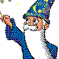
...to what the previous threshold maps produced...
As you can see the re-developed and checked threshold
maps produce a distictly better diffused pixel dither pattern.
And here is the new expanded set of built-in ordered dither
threshold map arguments, and the new names for selecting the
threshold map to use.
# Threshold Non-Dither / Minimal Checkerboard Dither
convert gradient.png -ordered-dither threshold od_threshold.gif
convert gradient.png -ordered-dither checks od_checks.gif
# Diffused Pixel Dither
convert gradient.png -ordered-dither o2x2 od_o2x2.gif
convert gradient.png -ordered-dither o3x3 od_o3x3.gif
convert gradient.png -ordered-dither o4x4 od_o4x4.gif
convert gradient.png -ordered-dither o8x8 od_o8x8.gif
# Halftone Screen (45 degree angle)
convert gradient.png -ordered-dither h4x4a od_h4x4a.gif
convert gradient.png -ordered-dither h6x6a od_h6x6a.gif
convert gradient.png -ordered-dither h8x8a od_h8x8a.gif
# Halftone Screen (orthogonal)
convert gradient.png -ordered-dither h4x4o od_h4x4o.gif
convert gradient.png -ordered-dither h6x6o od_h6x6o.gif
convert gradient.png -ordered-dither h8x8o od_h8x8o.gif
convert gradient.png -ordered-dither h16x16o od_h16x16o.gif
|
![[IM Output]](od_o2x2.gif) 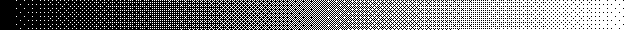
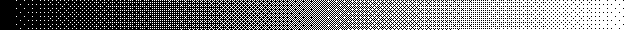
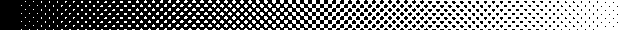
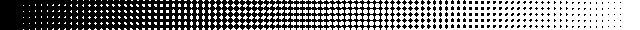
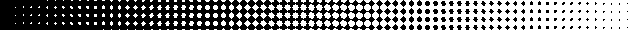
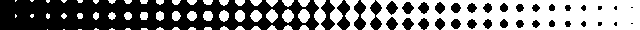
That is a total of 13 different types of threshold maps.
Internally the code was designed to allow simple addition of
more such maps in the future, and the development of the use of
XML data file to read in such maps in a later stage. Note the
"
checks" used to be called "
2x1", as
a halftone 2x2 pattern, however it is more than that. It
represents the most minimal dither pattern posible, for all
ordered dither patterns, one that only adds a single dither
pattern between any two colors. The "
threshold"
pattern is supplied as an equivelent to using a undithered
"
-posterize"
operator, as well as a test map on the posterization aspects of
the new "
-ordered-dither"
function. (See next section) As part of backward compatibility,
all the old '
{number}x{number}'
arguments have been made aliases to the appropriate 'named'
threshold map above. They are now depreciated, but will always
remain.
Posterized Ordered Dither Expansion
The above
consolidation of "
-ordered-dither"
code and the addition of the extra threshold mappings was not
the primary purpose of the re-development of the operator. With
some initial 'proof of concept' work using the "
-fx"
operator (see below), I wanted to provide a ordered dithering
between multiple levels of colors (as per the "
-posterize").
WHY? Because then you can generate a more deterministic
dithering of images than you can achieve with 'error correction
dithering'. This is especially important for color reductions
involving animations as you will not get problems from color
differences between frames. The posterization level is added to
"
-ordered-dither"
argument using commas, making this addition backward compatible
with previous usage of the operator. For example 'checks,6'
will use a classic "web-safe" color map (see the "netscape:"
built-in), but add one extra pseudo-level of color dithering
the 'checks' dither map between each level. In other words even
though only 6 levels of color per channel is being used
(producing 6^3 or 216 colors) the single dither pattern between
levels increases the dither to and effective 11 levels
(producing and effective 11^3 or 1331 colors). In this I plan
to implement the extra levels with the following proprieties.
- What channels are operated on is controlled by the
"-channels" setting.
- A single number is for all channels. EG: '6' for the
"web-safe colormap".
- Multiple numbers allows you to use different level counts
for each channel. EG: '8,8,4' will implement a '332' ordered
dithered colormap.
- If no numbers are given, fall back to a 2 level bitmap
dither.
- A value of zero disables posterization of that color
channel.
For example here is the same gray scale gradient first
dithered using a 6 grey levels.
# dithering between 6 grey levels
convert gradient.png -ordered-dither threshold,6 od_threshold_6.gif
convert gradient.png -ordered-dither checks,6 od_checks_6.gif
convert gradient.png -ordered-dither o2x2,6 od_o2x2_6.gif
convert gradient.png -ordered-dither o4x4,6 od_o4x4_6.gif
convert gradient.png -ordered-dither o8x8,6 od_o8x8_6.gif
|
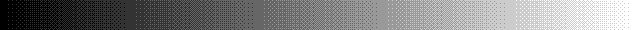 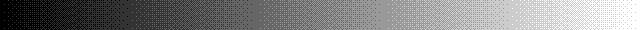
Compare that to the original gradient...
As you can see even though only 6 colors are used, with
ordered dithering you increase the effective number of colors
used to define the gradient, to a point where you can be hard
pressed to notice just how few colors were used! Not only can
you define the number of posterization levels for all channels,
but you can specify the levels for each channel (as specified
in "
-channels".
For example here we dithered the gradient using a special 332
color map (8 levels or red and green, 4 of blue) which defines
a total of 256 colors.
convert gradient.png -ordered-dither o8x8,8,8,4 od_o8x8_884.gif
|
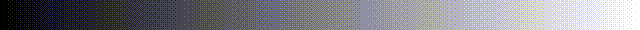
Because of the different number of color levels per
channel, the above image is not made up of pure grey colors,
but includes some bluish and yellowish pixels which cancels
each other out to produce extra levels of greys. Now compare a
'error correction dithered' posterization, with an 'ordered
dithered' posterization of the IM logo at level 2, and level 6.
convert logo.png -posterize 2 logo_posterize_2.gif
convert logo.png -ordered-dither o8x8 logo_o8x8_2.gif
convert logo.png -posterize 6 logo_posterize_6.gif
convert logo.png -ordered-dither o8x8,6 logo_o8x8_6.gif
|
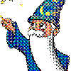
Each set of images use the same set of colors, the first
pair using the simple threshold set of 8 colors, with the
second using the 6 level 'web-safe' color map. The first image
in each pair is pseudo-randomly 'error correction' dithered,
the second is ordered dithered. That means if a small change
occurs the first will have almost the whole pattern of dithered
colors within the image will change, while the second will only
be modified wherever it was actually changed. In other words an
ordered dithered posterization is much better for animations,
that rely on finding the areas of change in images to reduce
the overall animation size. The 'error correction dithered'
version however is generally regarded as better as it is more
'correct' color wise, and there is less patterns to attract the
eye. Also at this time you can not use ordered dithering
between a random set of colors as you can with an 'error
correction dither', but only between mathematically determined
'posterized' colors.
Here is the logo ordered dithered against a '332'
colormap
convert logo.png -ordered-dither o8x8,8,8,4 logo_o8x8_332.gif
|
|
|
The '332' colormap (8 levels of red and green, 4 levels
of blue) is regarded as probably the best posterize colormap
for a 256 color limit image. The off difference in channel
levels producing a slightly better shading of colors for this
cartoon like image. Unfortunately this is not currently
reproducible using the error correction dithered
"
-posterize"
operator. It was to produce this color map that the expansion
of the "
-ordered-dither"
operator, included the ability to specify separate levels for
each color channel.
XML data source for threshold maps
This was a final
addition to the Ordered Dither Upgrade, and combined with a
revisement of all the XML data handling within IM by Cristy.
With this development you can now use a "
-list
threshold" command to see exactly what maps are
available to the "
-ordered-dither"
operator. as well as use personal "
threshold.xml"
data files to define your own maps.
DIY New Othered-Dither Replacement
This is provided
as a reference to the source and prototyping of the new
posterized form of ordered dither functionality that was shown
above. As part of using ImageMagick for my own images, I
wanted to be able to design and use my own ordered dither
patterns. As such I figured out a equivalent ordered dither
method using the extremely slow "
-fx"
operator. For example (repeat of
DIY Horizontal
Dither)... Here I created another set of dither pattern
images, specifically to produce a interesting shadow shading
effect.
montage dpat_hlines.gif -filter box -geometry 30x20+5+0 \
-tile x1 -background none -frame 3 dpat_hlines_images.gif
convert gradient:'[600x1]' -scale 600x24\! -negate \
dpat_hlines.gif -virtual-pixel tile -fx 'u[floor(13*u)+1]' \
dpat_hlines_gradient.gif
|
And here I apply it to generate a shadow pattern.
convert -size 120x55 xc:white -draw 'fill #777 ellipse 50,43 30,5 0,360' \
-motion-blur 0x15+180 -blur 0x2 sphere_shadow.png
convert sphere_shadow.png \
dpat_hlines.gif -virtual-pixel tile -fx 'u[floor(13*u)+1]' \
sphere_shadow_dither.gif
convert sphere_shadow_dither.gif -fill red -stroke firebrick \
-draw 'circle 35,25 35,5' sphere_shadow_hlines.gif
|
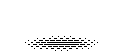
Now I converted Multi-Image Dither patterns, into and
ordered dither threshold map. Though this only works properly
for complete sets of ordered dithered images.
montage dpat_o2x2.gif -filter box -geometry 30x30+5+0 \
-tile x1 -background none -frame 3 dpat_o2x2_images.gif
convert dpat_o2x2.gif -delete 0 +append \
\( gradient:'[6x1]' -chop 1x0 -flop -chop 1x0 -scale 200% \) \
+matte +swap -compose CopyOpacity -composite \
-background none -crop 2x2 +repage -compose DstOver -flatten \
+matte dmap_o2x2.png
montage dmap_o2x2.png -filter box -geometry 30x30 -frame 3 dmap_o2x2_mag.png
|
Which can be applied using "
-fx".
Now we can dither our images using, just a single image, and a
much simpler threshold comparison for each pixel rather than
multiple images.
convert gradient:'[600x1]' -scale 600x24\! -negate \
dmap_o2x2.png -virtual-pixel tile -fx 'u>=v' \
dmap_o2x2_gradient.gif
|
And an example of applying this map.
convert logo.png \
dmap_o2x2.png -virtual-pixel tile -fx 'u>=v' \
diy_map_o2x2.gif
|
|
|
These were then expanded into posterized forms.
montage dpat_o2x2x6.gif -filter box -geometry 20x20+3+3 \
-tile x1 -background none -frame 2 dpat_o2x2x6_images.gif
convert gradient:'[600x1]' -scale 600x20\! -negate \
dpat_o2x2x6.gif -virtual-pixel tile -fx 'u[floor(21*u)+1]' \
dpat_o2x2x6_gradient.gif
|
And here I apply it to each color channel of IM logo test
image.
convert logo.png \
dpat_o2x2x6.gif -virtual-pixel tile -fx 'u[floor(21*u)+1]' \
diy_ordered_2x2x6.gif
|
|
|
And finally I created a posterized form of ordered
dither using a single binary threshold map.
map=dmap_o2x2.png; levels=6; \
g=`expr $levels - 1`; \
p=`convert $map -unique-colors -format %w info:`; \
t=`expr $p + 1`; d=`expr $g \* $p + 1`; \
convert gradient:'[600x1]' -scale 600x20\! -negate \
-virtual-pixel tile $map \
-fx "((((u*$d-floor(u*$d/$p)*$p)/$t)>=v)+floor(u*$d/$p))/$g" \
diy_o2x2_l6_gradient.gif
|
It is the mathematics developed for this final,
posterization ordered dither from a single threshold map, that
was encoded to produce the new
OrderedPosterizeImage(), function defined above.
{kind=link}
{kind=link}
{kind=link}
{kind=link}
{kind=link}
{kind=link}
{kind=link}
{kind=link}
{kind=link}
{kind=link}
{kind=link}
{kind=link}
{kind=link}
{kind=link}
{kind=link}
{kind=link}
{kind=link}
{kind=link}
{kind=link}
{kind=link}
{kind=link}
{kind=link}
{kind=link}
{kind=link}
{kind=link}
{kind=link}
{kind=link}
{kind=link}
{kind=link}
{kind=link}
{kind=link}
{kind=link}
{kind=link}
{kind=link}
{kind=link}
{kind=link}
{kind=link}
{kind=link}
{kind=link}
{kind=link}
{kind=link}
{kind=link}
{kind=link}
{kind=link}
{kind=link}
{kind=link}
{kind=link}
{kind=link}
{kind=link}
{kind=link}